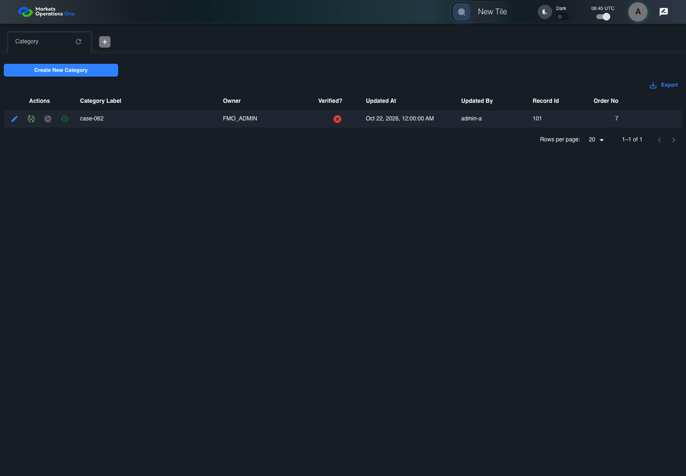
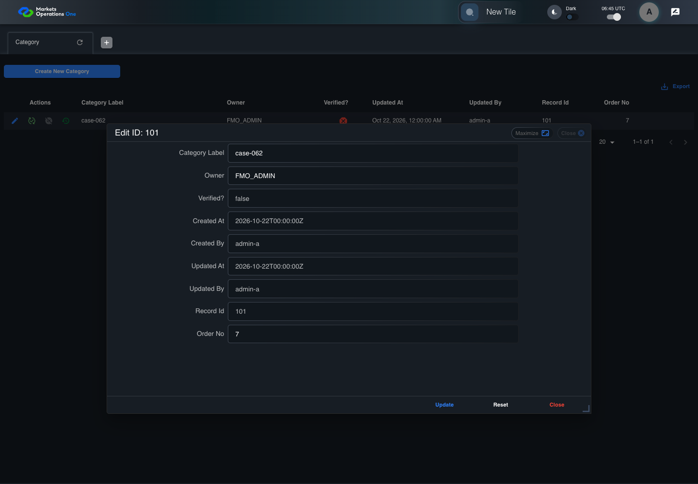
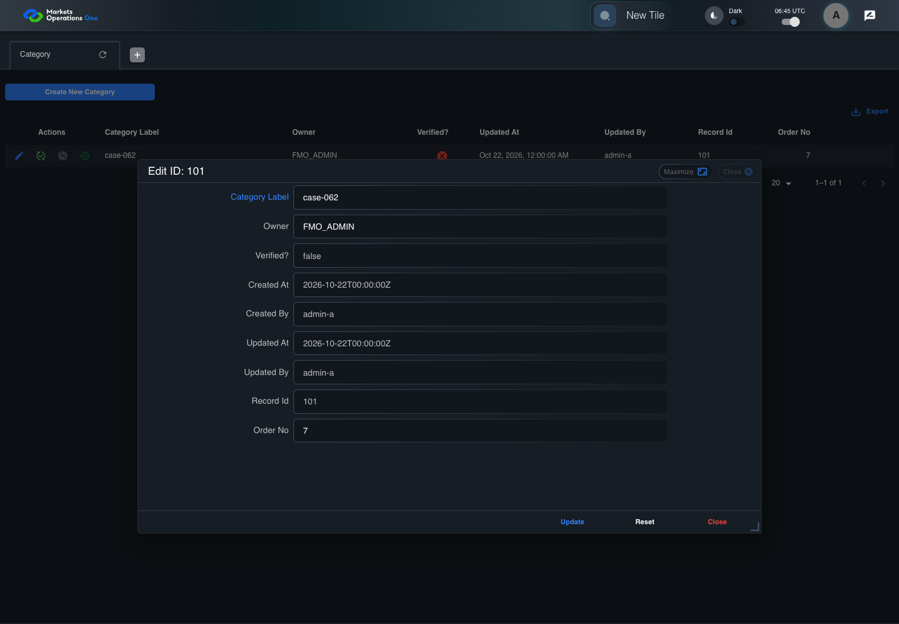
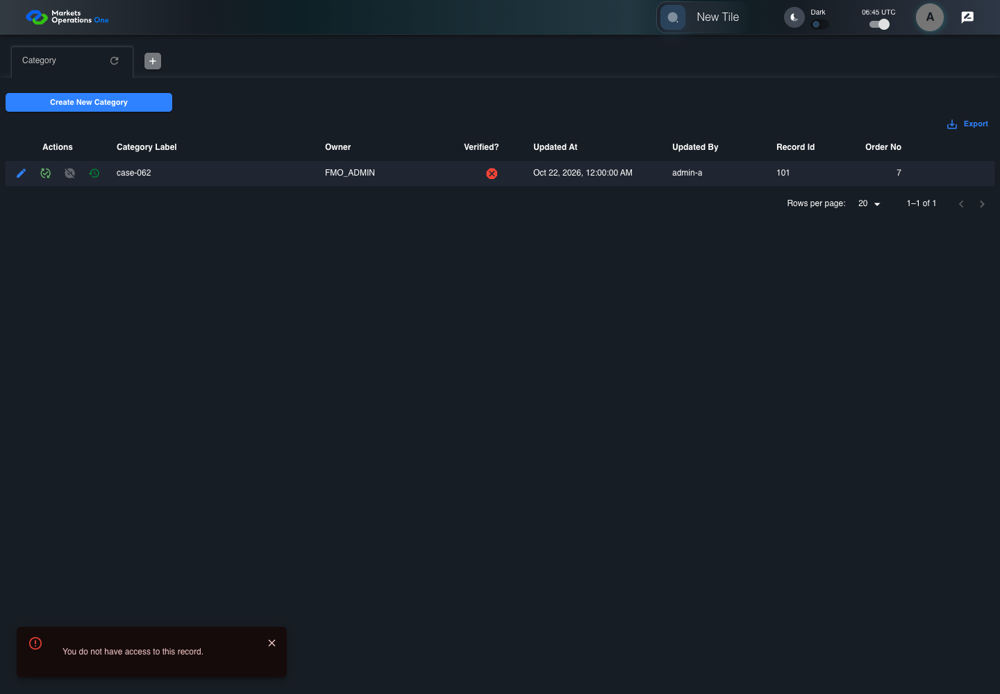

BFF-ADM-062 current BFF administration through actual UI
PASS · application/run-072/bff-adm-062-current-bff-administration-through-actual-ui-1cc50910dc92-attempt-1 · ACTUAL_APPLICATION_LOCAL_SERVICES
Actual current React and exact-current BFF admin controllers/services/JPA with actual migration DDL in disposable PostgreSQL. Controlled OUD/EMS2 identities and local Spring bootstrap. Fixture SQL seeds/mutates isolated records; service errors are actual database errors. Undefined agreed messages remain unresolved acceptance.
2026-10-22T06:45:25.041Z to 2026-10-22T06:45:29.920Z
Assertions and result · Artifact manifest · Exact run inputs and source hashes
Result SHA-256:a92c2f4f4addae25352a7f282b50277383c46760e4d4cd9d82c8f403d09d2db0Machine observations
- actual-identity-projection.json
3f713dd8d80c0e1273a534481bc37d0373cc3c06d126fc8e003ef8ff235f5ad3 - baseline-inputs.json
d80b74b00762c5503b01251d62f8558d6d8b570df6f8e1aad31457d34d95e4c9 - bff-boundary.json
030f4fb098747635611bbcf4ddf68b1bc2e7cc9278603a6bd8364957b1417c10 - committed-ui-submission-comparisons.json
edb34b521e9f5f4c6e95a7120f3d1f8e9464dcfaa7a464bf9b3413d2f099292f - fixture-step-4.json
0284762efdcb5c24dc38af31dc8d354fbcd343d1555db0a610622028c3d29807 - initial-persisted-records.json
0604571e7cdc2f0e9c00dd38350d0b602007f8e8633e9bcade5ad4b996faae3e - persisted-after-submit.json
738be02b3eeb107ec2573eeaa37effc2586ebf7d7e9e63b9d499ec863500e1bd - super-user-stale-read-category.json
f2338d392a24aac02d0788541117841af49a2f94b75937c790708075db1f0439 - ui-origin-bff-requests.json
3514e905e3c610f552cc224f195f4914f8b58a22c96f7302937af548b5cc6741
Screenshot capture: CAPTURED. Named frames: 11.
Step screenshot bindings: COMPLETE. 10/10 canonical steps have execution screenshots.
Bindings measure structural coverage only. They do not establish screenshot content quality or relevance.
Screenshot content review: NOT_REVIEWED. Recorded context: 0/11 frames. Identical image bytes: 6 repeated frames. Recorded context does not establish human visual review.
Canonical step timeline
Given Admin S uses subject "admin-s" with role "SUPER_USER only" in an isolated authenticated browser
Execution: PASSED.
1. step-01 Visible state after step 1: Given Admin S uses subject "admin-s" with role "SUPER_USER only" in an isolated authenticated browser
2026-10-22T06:45:27.378Z · 1440×1000
Step: /Users/lushevol/code/github/ratan-release-impact/workbench/tasks/ui-test-coverage-20261022/test-cases.md:17335
SHA-256:ae35abe1e87d2a30b66e8e6b0b8e1927f2fb3d13713524ee090c628c775818fcAnd the controlled Category fixture records the initial grid rows and persisted values
Execution: PASSED.
2. step-02 Visible state after step 2: And the controlled Category fixture records the initial grid rows and persisted values
2026-10-22T06:45:27.541Z · 1440×1000
Step: /Users/lushevol/code/github/ratan-release-impact/workbench/tasks/ui-test-coverage-20261022/test-cases.md:17336
SHA-256:ae35abe1e87d2a30b66e8e6b0b8e1927f2fb3d13713524ee090c628c775818fcImage bytes match frame 1. An unchanged image can be valid for consecutive assertions. This match does not establish correct step content.
And the Category grid has record "101" owned by "FMO_ADMIN"
Execution: PASSED.
3. step-03 Visible state after step 3: And the Category grid has record "101" owned by "FMO_ADMIN"
2026-10-22T06:45:27.625Z · 1440×1000
Step: /Users/lushevol/code/github/ratan-release-impact/workbench/tasks/ui-test-coverage-20261022/test-cases.md:17337
SHA-256:ae35abe1e87d2a30b66e8e6b0b8e1927f2fb3d13713524ee090c628c775818fcImage bytes match frame 2. An unchanged image can be valid for consecutive assertions. This match does not establish correct step content.
And the baseline fixture data defines "Category Label" as "case-062"
Execution: PASSED.
4. step-04 Visible state after step 4: And the baseline fixture data defines "Category Label" as "case-062"
2026-10-22T06:45:27.706Z · 1440×1000
Step: /Users/lushevol/code/github/ratan-release-impact/workbench/tasks/ui-test-coverage-20261022/test-cases.md:17338
SHA-256:ae35abe1e87d2a30b66e8e6b0b8e1927f2fb3d13713524ee090c628c775818fcImage bytes match frame 3. An unchanged image can be valid for consecutive assertions. This match does not establish correct step content.
When Admin S clicks the button labeled "Edit" in the Category grid row with "Record Id" "101"
Execution: PASSED.
5. step-05 Visible state after step 5: When Admin S clicks the button labeled "Edit" in the Category grid row with "Record Id" "101"
2026-10-22T06:45:28.016Z · 1440×1000
Step: /Users/lushevol/code/github/ratan-release-impact/workbench/tasks/ui-test-coverage-20261022/test-cases.md:17339
SHA-256:edde528708a5c2544cb5b15562c19454ed1f77b11293f735924db9471e722fecThen the dialog titled "edit ID: 101" is visible on the Category administration page
Execution: PASSED.6. step-06 Visible state after step 6: Then the dialog titled "edit ID: 101" is visible on the Category administration page
2026-10-22T06:45:28.128Z · 1440×1000
Step: /Users/lushevol/code/github/ratan-release-impact/workbench/tasks/ui-test-coverage-20261022/test-cases.md:17340
SHA-256:85d4702a1ddb2331817e3f8a6fc689059eba6c69ac7c73a1de59de22bbdac4a1When Admin S fills the textbox labeled "Category Label" with "case-062" in dialog "edit ID: 101"
Execution: PASSED.
7. step-07 Visible state after step 7: When Admin S fills the textbox labeled "Category Label" with "case-062" in dialog "edit ID: 101"
2026-10-22T06:45:28.660Z · 1440×1000
Step: /Users/lushevol/code/github/ratan-release-impact/workbench/tasks/ui-test-coverage-20261022/test-cases.md:17341
SHA-256:8d7152aa9465a87320d2f30a6cb39c2a2aa19e406db48c788446630c4d553258And Admin S clicks the button labeled "Update" in dialog "edit ID: 101"
Execution: PASSED.
8. step-08 Visible state after step 8: And Admin S clicks the button labeled "Update" in dialog "edit ID: 101"
2026-10-22T06:45:28.945Z · 1440×1000
Step: /Users/lushevol/code/github/ratan-release-impact/workbench/tasks/ui-test-coverage-20261022/test-cases.md:17342
SHA-256:7e2208a74ea453ef35fed9dd8ec2dd94d4575b5ce77ff51d36d1e63e0c05a6a8Then the alert with severity "error" in the portal snackbar contains the exact text "You do not have access to this record."
Execution: PASSED.
9. step-09 Visible state after step 9: Then the alert with severity "error" in the portal snackbar contains the exact text "You do not have access to this record."
2026-10-22T06:45:29.026Z · 1440×1000
Step: /Users/lushevol/code/github/ratan-release-impact/workbench/tasks/ui-test-coverage-20261022/test-cases.md:17343
SHA-256:7e2208a74ea453ef35fed9dd8ec2dd94d4575b5ce77ff51d36d1e63e0c05a6a8Image bytes match frame 8. An unchanged image can be valid for consecutive assertions. This match does not establish correct step content.
And the Category data grid with column "Record Id" row identifiers and loaded field values equal the initial grid snapshot on the Category administration page
Execution: PASSED.
10. step-10 Visible state after step 10: And the Category data grid with column "Record Id" row identifiers and loaded field values equal the initial grid snapshot on the Category administration page
2026-10-22T06:45:29.212Z · 1440×1000
Step: /Users/lushevol/code/github/ratan-release-impact/workbench/tasks/ui-test-coverage-20261022/test-cases.md:17344
SHA-256:7e2208a74ea453ef35fed9dd8ec2dd94d4575b5ce77ff51d36d1e63e0c05a6a8Image bytes match frame 9. An unchanged image can be valid for consecutive assertions. This match does not establish correct step content.
Additional named frames

The final visible state after the named test assertions.
2026-10-22T06:45:29.344Z · 1440×1000Step: Test source: /Users/lushevol/code/github/ratan-release-impact/workbench/e2e/audit-specs/bff-admin.spec.ts:11
SHA-256:
7e2208a74ea453ef35fed9dd8ec2dd94d4575b5ce77ff51d36d1e63e0c05a6a8Image bytes match frame 10. An unchanged image can be valid for consecutive assertions. This match does not establish correct step content.
Screenshots establish visible state only. Assertions and traces support functional claims.